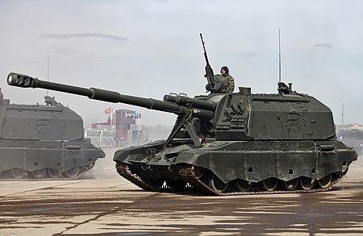
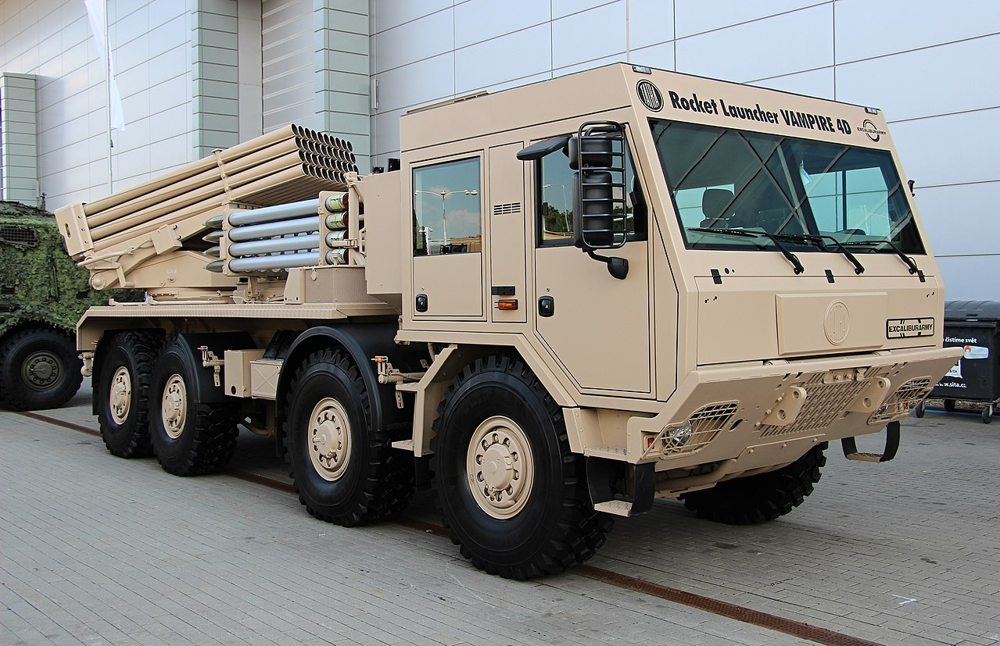
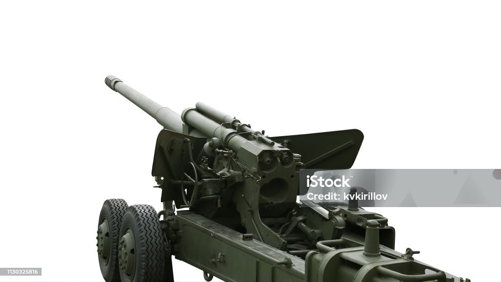

3 Види Артилерії
Артилерія найтатичніший й руйнівнивий вид Артилерії і зараз поясню причину й назву 3 вида
-
САУ
Самохі́дна артилері́йська устано́вка (САУ) — артилерійська система на саморухомій базі, яка призначена для безпосереднього вогневого супроводу танків та піхоти в бою, виконання завдань артилерійської підтримки рухомих з'єднань та боротьби з танками противника.
 -
РСЗВ
Реакти́вна систе́ма залпового вогню́ (РСЗВ) — один із типів артилерійських систем, призначений для ураження відкритої й укритої живої сили противника, неброньованої техніки та бронетранспортерів у районі зосередження артилерійських і мінометних батарей, командних пунктів та інших цілей, а також для проведення дистанційного мінування місцевості. В основі дії системи лежить реактивний принцип. Комплекс озброєння включає багатозарядну пускову установку, реактивні снаряди (некеровані ракети, реактивні глибинні бомби), транспортну або транспортно-зарядну машину та інше обладнання. Система несе в собі зазвичай більше десятка реактивних снарядів, кожен з яких має свій окремий ствол для запуску.
 -
ФАУ
Фау-Фортифікаційна Артилерійська установка як правило використовуються якщо нема часу терміново звести велику лінію оборони він не ефективний але якщо будуть давити мясом то піде,іноді може підбивати бронемобілі та танки й часто залишається незамітною.
